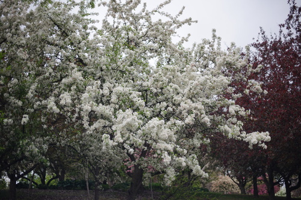
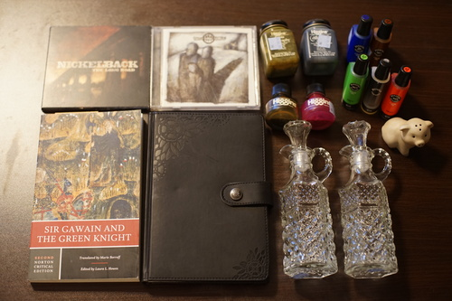

I am sending every ounce of luck i have to pompon in these trying times (volks lottery)! apparently neither of us have won a volks lottery yet but i'm donating all my future wins to the cause. i will pray to mother sd every night!!
reggie is amazing and max is very good as well. i may regret not entering for reggie in the future, but i'm sure there will be rereleases if i change my mind. until then ill just keep saving photos of him!! max is really very good too, but spicy tan reggie boy is just too much.
instead of going to fanime (i've never been to fanime) my friends came over this weekend! we went to the arbitrarium and had an almost lovely walk. the weather was not so beautiful unfortunately but everything else was wonderful. ryan found himself to be a big fan of the serbian spruce!
i got a few minutes at the thrift store... i really wanted more time but i had to hurry to not bore my friends!!
185 (red), 368 (green), 72 (blue), 168 (brown). These seem to be alcohol pen refills but I'm sure I can find something fun to do with them without the pens.
it's half empty
It's not waterproof.
I was going to buy this! Until I opened it and Can't Buy My Love by Yui was inside. Never heard of her but I bought it anyway because I am a weeaboo.
A very embarrassing CD to own and I can't even toss the case because it's not a jewel case.
Ryan's
Ryan's
I forgot the name for this object and I spent a whole night trying to think of it.
i was trying out the inks with a paintbrush since i don't actually have any sort of dip pen and i realized ive never even tried writing with a paintbrush before. it's really difficult! i'm not sure why i never realized that before. theres a lot of pushing in writing that just does not work with a brush.